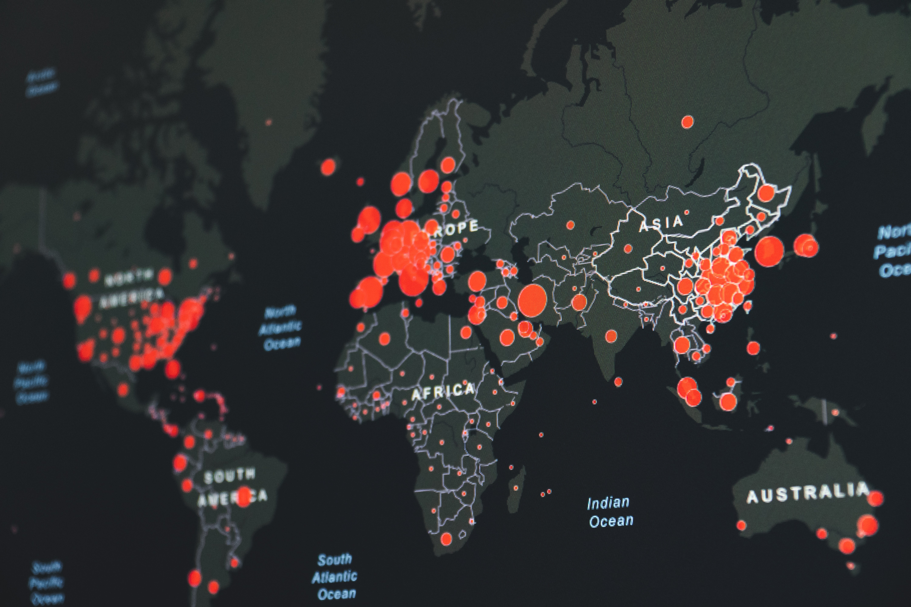

My Name Is
Ayush Maheshwari
I am pursuing my Masters in Business Analytics and Information Management from Krannert School of Management, Purdue University. I have 5+ years of experience working in the management consulting and professional services industry and provide Big Data based Business Intelligence Reporting and warehousing solutions.

NBA Analytics and Game
Prediction Dashboard
Created a predictive model using decision trees and logistic regression to predict the probability of home team winning a basketball match in NBA league and built a UI using R shiny to showcase team and player performance in latest season.
Coronavirus(COVID-19)
Tableau Dashboard - II
Created a Tableau Dashboard displaying the Cases and Deathes caused by the novel Coronavirus (Covid -19). This dashboard gives the user the ability to check the total number of cases/deaths, compare it with other countries toggle between cases and death to display it on map.
Coronavirus(COVID-19)
Tableau Dashboard - I

Created a Tableau Dashboard displaying the Cases and Deathes caused by the novel Coronavirus (Covid -19) throughout the world. This dashboard gives the user the ability to check the number of cases/deaths on any day and person can toggle between cases and death to display it on map.
Self- Learning
Facial Recognition

A self-learning AI which incorporates machine learning and detects and Identifies faces of people and maintains a database containing information about the person. Two special features of the project. First is its self-learning capabilities, i.e. whenever a new person comes in front of the camera it asks for the person's name and automatically trains itself in order to identify that person in the future. Second is the voice interaction. User inputs data over voice and the AI responds via voice.
Brandy- an AI which has the following capabilities:
1) Weather report of current as well as any place.
2) full music control via voice
3) writing documents via voice.
Analyzing Game Sales
on STEAM
An academic project where we try to solve a business problem regarding how demand of games can be increased on STEAM platform by leveraging various variables using Python, Web Scraping, Regression, Natural Language Processing, Image processing and A/B testing
Analyzing and Predicting
Infant Mortality
Created a predictive model using decision trees to predict probability of infant mortality in Indiana and developed an R Shiny app showing severity of mortality in different locations
An academic project where we perused historical data of BITCOIN price and used ARIMA modelling to create a model predict BITCOIN price using python Google Cloud Platform, Hadoop(Mapper and Reducer) and Hive.
{kind=link}